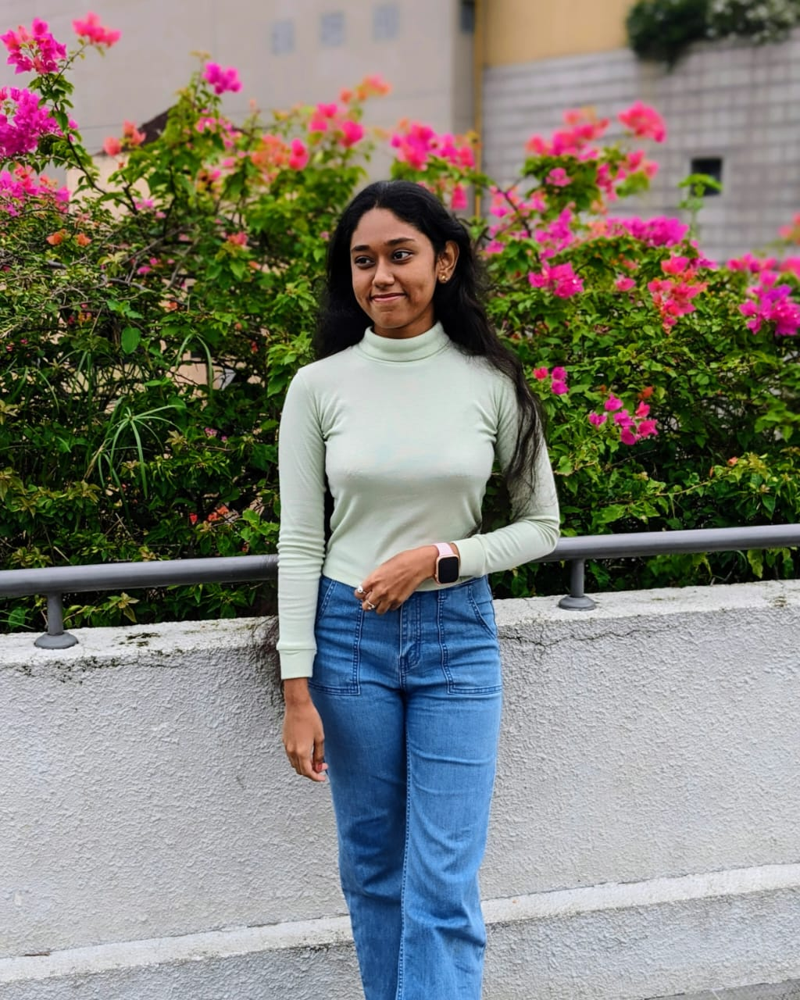

Welcome to my portfolio!
I am an undergraduate student at Rajarata University of Sri Lanka, pursuing a Bachelor's degree in Information Communication Technology

Education
I am studying for a Bachelor's degree in Information Communication Technology at Rajarata University of Sri Lanka, starting in September 2023.
In 2021, I completed my Advanced Level (A/L) exams in the Technology stream. I got B grades in Engineering Technology and Science for Technology, a C grade in Information & Communication Technology, a A grade in General Information Technology and an S pass in General English.
In 2018, I finished my Ordinary Level (O/L) exams with A grades in Sinhala, Mathematics, Information & Communication Technology, and Sinhala Literature. I also got B grades in History, Buddhism, Science, and Tamil, and a C grade in English. This background gives me a strong foundation in both technical and non-technical subjects, preparing me well for my ICT studies at university.
Skills
HTML: I know how to create web pages using HTML. I can use various HTML tags to ensure the structure of the document is correct and accessible.
CSS: I can design beautiful and responsive web pages using CSS. I know how to use Flexbox, Grid, and media queries to manage layouts. I am also familiar with SASS for more efficient styling.
PHP: I can write server-side scripts using PHP. I can develop dynamic web applications, handle form submissions, work with databases, and create RESTful APIs. I am also familiar with the Laravel framework for more complex applications.
My Travels
From the moment I stepped foot in Mimure, I knew my heart belonged to the open road. Each journey offers a new adventure, and every destination tells a unique story.
In Dibulagala, I hiked through lush forests, feeling the crisp air invigorate my spirit. The ancient ruins whispered secrets of the past, and the panoramic views from the hilltop were simply breathtaking.
Danigala, with its mystical aura and fascinating rock formations, felt like stepping into another world. The climb was challenging, but the sense of accomplishment upon reaching the summit was unparalleled.
Kandy, with its rich cultural heritage, captivated me with its historic temples and vibrant festivals. The serene beauty of the Kandy Lake and the majestic Temple of the Tooth Relic left a lasting impression on my soul.
Bellwood's serene countryside and tranquil rivers provided the perfect escape from the hustle and bustle of city life. Here, I found peace in the simplicity of nature and the warmth of the local communities.
Ambuluwawa's biodiversity complex was a marvel to explore. Climbing the spiral tower, I was rewarded with a 360-degree view of lush landscapes and distant mountains, a sight that filled me with awe and inspiration.
Riveston's misty mountains and winding trails offered an exhilarating experience. The cool breeze and the sound of rustling leaves created a symphony of nature that resonated deep within me.
Pitawalapathana's grasslands were a sight to behold. Walking through the vast, open plains, I felt a sense of freedom and connection to the earth that was both grounding and uplifting.
Each place I visit enriches my life with new experiences and memories. Traveling isn't just a hobby for me; it's a journey of discovery, a way to understand the world and myself better. With every trip, I collect stories, meet new people, and embrace the beauty of our diverse planet. My travels have taught me to appreciate the little things and to find joy in every moment, making me eager for the next adventure.